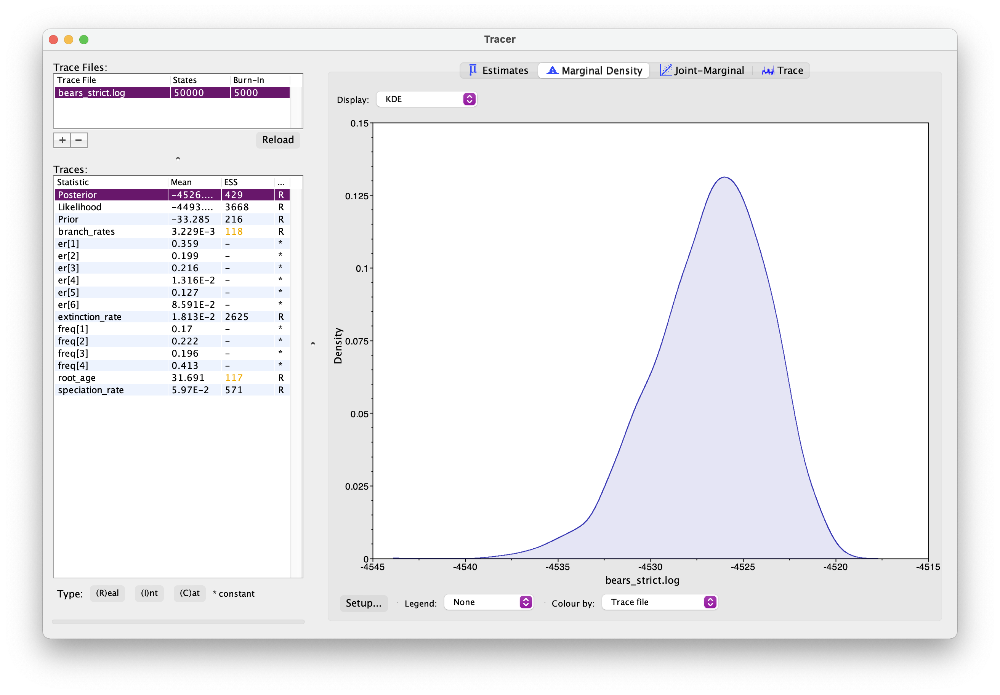
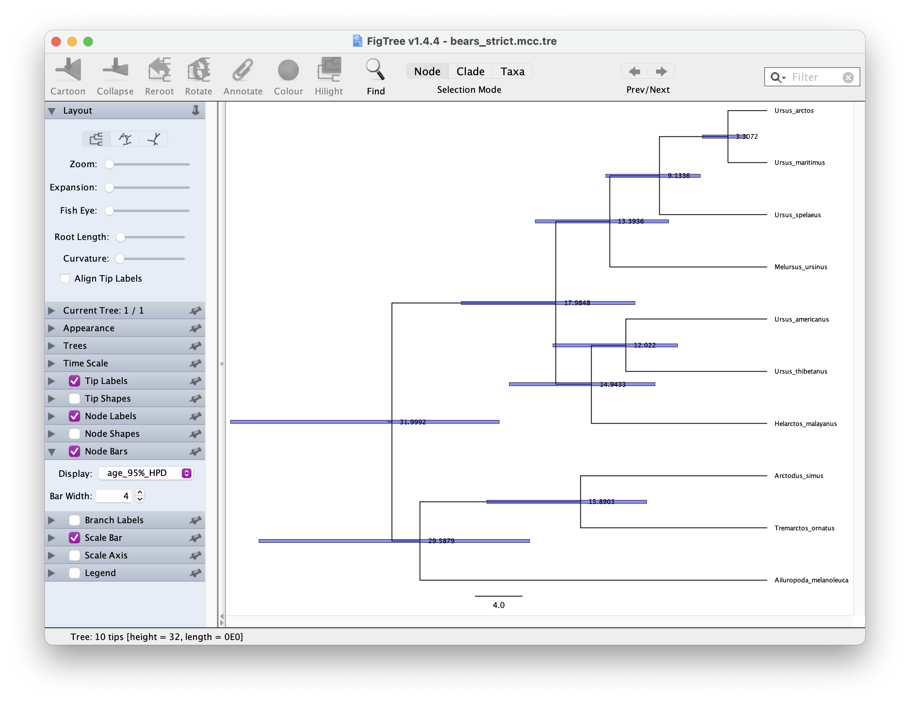
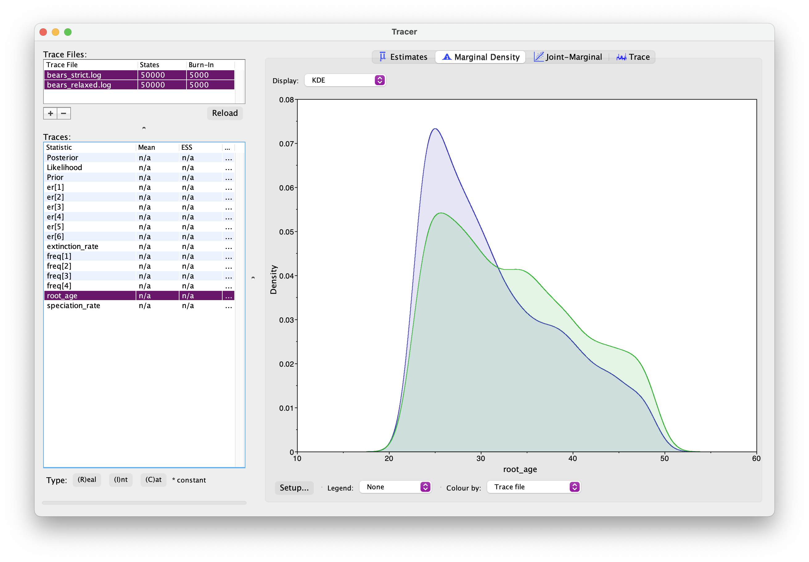

In this exercise we’ll estimate of a time tree of bears. This means that the resulting branch lengths will represent time, instead of expected substitutions per site. The data we’ll use is an alignment (1,000 bp) of cytochrome b sequences for 8 living bear species \(-\) you can download this from here.
For this exercise create a folder called exercise 5. Then create two sub-directories: data and scripts. For divergence time estimation we need three model components, so we’ll create the following scripts:
main.Rev for reading the data, setting up the the tree model and MCMC settingsnode_dating.Rev for the time tree model.GTR.Rev for the substitution models.clock_strict.Rev and clock_relaxed_lognormal.Rev for alternative clock models. Edit the scripts in a text editor of your choice.Start with your main.Rev script. As before, we’ll start by reading in the data and defining some helper variables.
data <- readDiscreteCharacterData("data/bears_cytb.nex")num_taxa <- data.ntaxa() # number of taxa
num_branches <- 2 * num_taxa - 2 # number of branches in an *rooted* tree
taxa <- data.taxa() # list of taxon namesDefine a set of variables for setting up our MCMC.
moves = VectorMoves()
monitors = VectorMonitors()For time calibrated tree inference we need to use a tree prior that has branch lengths in units of time. We often use birth-death process tree models for this purpose.
Go to your node_dating.Rev script to set this up.
Since all the taxa included in the analysis in this exercise are living species we’ll use a birth-death model that doesn’t incorporate the fossil sampling process. Two key parameters are the speciation rate (\(\lambda\)) and the extinction rate (\(\mu\)) We will assume these rates are constant over time and place exponential priors on each of these.
speciation_rate ~ dnExponential(10)
extinction_rate ~ dnExponential(10)Each parameter is a stochastic variable drawn from a different exponential distribution with rates. Note an exponential distribution with \(\delta\) = 10 has an expected value (mean) of \(1/\delta\) = 0.1.
Next specify the moves of these parameters.
moves.append( mvScale(speciation_rate, lambda = 0.5, tune = true, weight = 3.0) )
moves.append( mvScale(extinction_rate, lambda = 0.5, tune = true, weight = 3.0) )The argument tune = true here means that the MCMC will find the optimum size of the proposal for these moves during the initial part of the run.
\(\rho\) is the third parameter in our tree model and is the probability of extant species sampling. Since we sample all extant bears, we’ll specify this probability as a constant variable = 1.0 using the <- operator.
rho <- 1.0Next we add the calibration information. We’ll use the age of one of the oldest known bear fossils (Zaragocyon daamsi, range = 20–22.8 Ma) and a previous estimate (∼49 Ma) for the age of caniforms, which is the clade containing bears and other “dog-like” mammals. Since we don’t have any more information about the age between these bounds, we’ll use a uniform prior.
# min and max bounds
root_min <- 22.8
root_max <- 49.0
# uniform prior
root_age ~ dnUniform(root_min, root_max)
# assign a move to sample the root age
moves.append( mvScale(root_age, lambda = 1, tune = true, weight = 5.0) )Now that we’ve specified the parameters of the birth-death model and the root age prior, we can use these to define the prior distribution on the tree topology and divergence times.
tree ~ dnBDP(lambda = speciation_rate, mu = extinction_rate, rho = rho, rootAge = root_age, taxa = taxa)
# moves to search tree space
moves.append( mvNarrow(tree, weight = num_taxa) )
moves.append( mvFNPR(tree, weight = num_taxa/4) )
moves.append( mvNodeTimeSlideUniform(tree, weight = num_taxa) )
moves.append( mvSubtreeScale(tree, weight = num_taxa/5.0) )Next we’ll specify a strict clock model to describe the rate of character change over time. This model assumes that the rate is constant over time and across all branches in our tree.
Open your clock_strict.Rev script. We don’t know the rate of evolution, so we’ll use an exponential prior.
branch_rates ~ dnExponential(10.0)
moves.append( mvScale(branch_rates, lambda = 0.5, tune = true, weight = 3.0) )This rate will be used for all branches.
Next we’ll specify the GTR substitution model, which describes the probability of transitioning from one character state to another.
Hint you can use your code or script from the previous exercise.
We just need to make one change from the previous exercise. We need to specify the branch rates using the argument branchRates = branch_rates. This tells the function that we’re using a molecular clock.
seq ~ dnPhyloCTMC(tree = tree, Q = Q, type = "DNA", branchRates = branch_rates)Back in main.Rev add the following lines to include the tree, clock and substitution models.
# birth death model + node calibratons
source("scripts/node_dating.Rev")
# clock model
source("scripts/clock_strict.Rev")
# substitution model
source("scripts/GTR.Rev")The MCMC set up is very similar to before. First we create the variable mymodel to finish the model set up.
mymodel = model(tree)
mymodelThen we define a set of monitors to capture the output.
# parameters printed to file
monitors.append( mnModel(filename = "output/bears_strict.log", printgen = 50) )
# trees printed to file
monitors.append( mnFile(filename = "output/bears_strict.trees", printgen = 50, tree) )
# parameter values printed to screen during the MCMC
monitors.append( mnScreen(printgen = 500, root_age) )Finally, we’ll set up the MCMC run using the mcmc function, specifying our model, the vector of monitors and the vector of moves and run the chain for 10000 generations.
mymcmc = mcmc(mymodel, monitors, moves)
mymcmc.run(generations = 50000, tuningInterval = 5000)Note that this time we’ve adding the argument tuningInterval = 1000. This tells the chain how long to spend optimising the MCMC moves. Different datasets behave differently \(-\) the above option partly automates the selection of move parameters that maximise efficiency of the MCMC.
This might take a while run pretty quickly. Meanwhile, you could start setting up the relaxed clock model.
As before, open your .log file in Tracer. It should look something like this.

Explore the output. Can you identify the different parameters? Has the analysis converged? How would you interpret the root age output?
Next let’s generate a summary tree and open it in FigTree.
trace = readTreeTrace("output/bears_strict.trees")
mccTree(trace, file = "output/bears_strict.mcc.tre")In FigTree, select ‘Node Labels’ to show the node ages. The select ‘Node Bars’ and Display > age_95%_HPD. This will show you the Bayesian Credible Intervals for each node. It should look something like this.

Now let’s tree running the analysis with a relaxed clock model. This family of models allows rates to vary across the tree. We’ll use the uncorrelated lognormal model, which is simple and widely used. It assumes each branch on the tree has an independent rate, drawn from a lognormal distribution.
Open your clock_relaxed_lognormal.Rev script. Ordinarily, we don’t know the mean or the variance of the lognormal distribution, so we’ll define these as stochastic variables that will be estimated from the data.
# prior on the mean of the lognormal distribution
branch_rates_mean ~ dnExponential(10.0)
# move on this parameter
moves.append( mvScale(branch_rates_mean, lambda = 0.5, tune = true, weight = 3.0) )
branch_rates_sd ~ dnExponential(10.0)
# move on this parameter
moves.append( mvScale(branch_rates_sd, lambda = 0.5, tune = true, weight = 3.0) )
# transform the rate into a log of the branch rate mean
ln_branch_rates_mean := ln( branch_rates_mean )
# create a vector of rates for each branch
for(i in 1:num_branches){
branch_rates[i] ~ dnLognormal(ln_branch_rates_mean, sd = branch_rates_sd)
moves.append( mvScale(branch_rates[i], lambda = 0.5, tune = true, weight = 1.0) )
}
# add moves on the branch rates vector
moves.append( mvVectorScale(branch_rates, lambda = 0.5, tune = true, weight = 4.0) )Back in main.Rev switch out your clock models.
# clock model
source("scripts/clock_relaxed_lognormal.Rev")Next we need to change the name of the output files, so we don’t overwrite the existing files.
# parameters printed to file
monitors.append( mnModel(filename = "output/bears_relaxed.log", printgen = 10) )
# trees printed to file
monitors.append( mnFile(filename = "output/bears_relaxed.trees", printgen = 10, tree) )Once this analysis is done, open both sets of log files in Tracer. And if you select two Trace files simultaneously using the shift key, you can examine estimates for the same parameter from two separate analyses. You should see something like this.

What differences do you notice between the two analyses? In particular, what about the root age? Which model is more likely to be correct?
Generate another summary tree for this analysis.
Do you notice any differences between the trees?
Finally today, we’ll run our analysis under the prior. This means we’ll examine the output excluding the likelihood, i.e., excluding any information that comes from the sequence data.
Switch back to the strict clock model (it’ll run faster since this model has fewer moves). And change the output file names.
# parameters printed to file
monitors.append( mnModel(filename = "output/bears_priors.log", printgen = 10) )
# trees printed to file
monitors.append( mnFile(filename = "output/bears_prior.trees", printgen = 10, tree) )Then all we need to do is add the argument underPrior = TRUE to the MCMC function.
mymcmc.run(generations = 50000, tuningInterval = 5000, underPrior = TRUE)Examine the output in Tracer and this time look at the differences between the prior and posterior root ages.
You can also take a look at the MCC tree to see the differences for other nodes.
How would you intepret these differences or similarities? What information are we gaining from the sequence data? What if our prior information is incorrect?
A complete set of scripts for this exercise can be downloaded here.